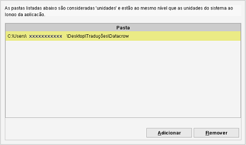
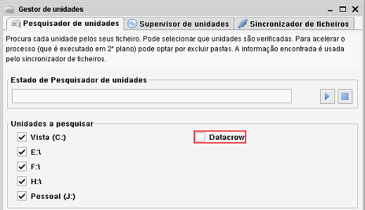

Pastas como unidades
Caminho de menu: Definições > Definições > Pastas como unidades
Nem todas as plataformas têm ou conhecem o conceito de unidade. Para lhe facilitar a vida no Data Crow (especialmente ao trabalhar
com o Gestor de unidades), pode definir quais pastas devem ser consideradas unidades de disco.
Basicamente, é criado um atalho para a pasta. Sem isto, o Gestor de unidades não
funcionará na maioria das plataformas não Windows.

Com as definições mostradas acima, o Gestor de unidades aparece como segue:

Adicionar nova unidade
Clique em Adicionar. Vai abrir o explorador de ficheiros. Navegue até à pasta e clique em Abrir.
Remover uma unidade
Selecione a unidade na tabela e clique em Remover.
Nota: tem de reiniciar o Data Crow para que as alterações tenham efeito.